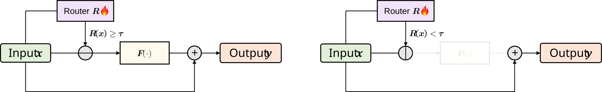
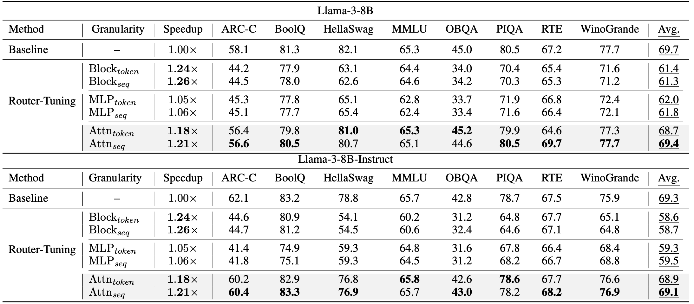
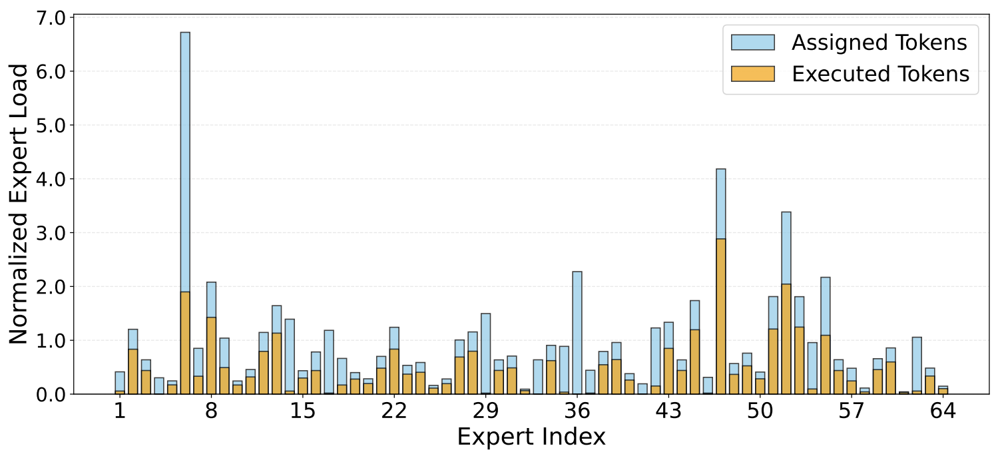
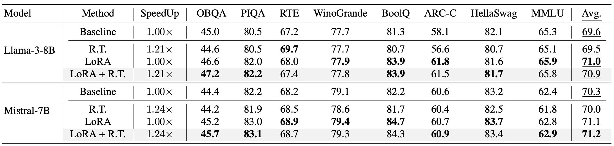

Router-Tuning: A Simple and Effective Approach for Dynamic-Depth in Transformers
Fine-tune only lightweight router heads to empower existing Transformers with dynamic-depth token skipping — capturing the efficiency of Mixture of Depths at a fraction (<0.001%) of full-model retraining cost.

Dynamic-Depth & Token-Routing Simulator
Adjust the token compute budget and routing granularity to observe real-time estimated FLOPs savings, speedup, and token-skipping heatmaps across Transformer layers!
Model & Router Controls
Token Routing Heatmap Across Depth
Green = Computed Layer • Dotted Grey = Skipped (Residual Pass)
How Router-Tuning Operates
Instead of updating billions of LLM parameters, Router-Tuning optimizes ultra-compact linear routing heads with Straight-Through Estimators (STE) to enable end-to-end discrete token routing.
Router-Only Optimization
The transformer backbone weights $\mathbf{W}_{\text{backbone}}$ are 100% frozen. We only train a lightweight router projection $\mathbf{W}_r \in \mathbb{R}^{d \times 1}$ per layer, drastically eliminating catastrophic forgetting and reducing tuning VRAM.
Discrete STE Backprop
Binary routing masks $\mathbf{m} \in \{0, 1\}$ are formed via thresholding. The Straight-Through Estimator copies upstream gradients directly to routing logits, allowing gradient descent across discrete skip decisions.
Capacity Regularization
An auxiliary capacity loss forces the average activation ratio to obey the user-specified compute budget $C_{\text{target}}$, preventing trivial all-skip or all-compute collapse.
Pareto Frontier: Accuracy vs. Acceleration
Router-Tuning outperforms static pruning and matches full-model dynamic tuning across extensive benchmarks, all with orders-of-magnitude fewer trainable parameters.
Benchmark Quality-Speedup Tradeoff
Interactive comparison across LLM efficiency paradigms
Main Benchmark Tradeoffs

Expert Routing Analysis

LoRA Compatibility

Quickstart in 3 Simple Steps
Get started with environment setup, dataset preparation, distributed router fine-tuning, and downstream dynamic evaluation.
# 1. Create and activate a fresh python environment
conda create -n router-tuning python=3.10 -y
conda activate router-tuning
# 2. Clone repository & install dependencies
git clone https://github.com/CASE-Lab-UMD/Router-Tuning-Mixture-of-Depths.git
cd Router-Tuning-Mixture-of-Depths
pip install -r requirements.txt
# 3. (Optional) Install FlashAttention-2 for faster execution
pip install --no-build-isolation flash-attn==2.6.3BibTeX Citation
Please cite our work if you find this project helpful in your research
@inproceedings{he2025routertuning,
title = {Router-Tuning: A Simple and Effective Approach for Enabling Dynamic-Depth in Transformers},
author = {He, Shwai and Ge, Tao and Sun, Guoheng and Tian, Bowei and Wang, Xiaoyang and Yu, Dong},
booktitle = {Proceedings of the 2025 Conference on Empirical Methods in Natural Language Processing (EMNLP 2025)},
year = {2025},
url = {https://arxiv.org/abs/2410.13184}
}